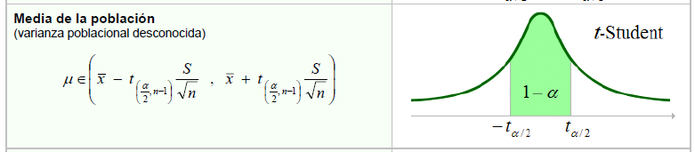
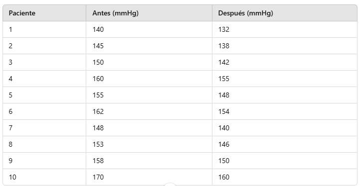
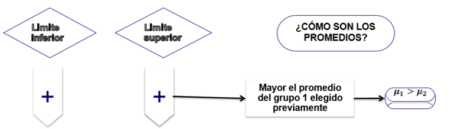
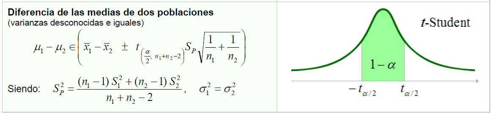
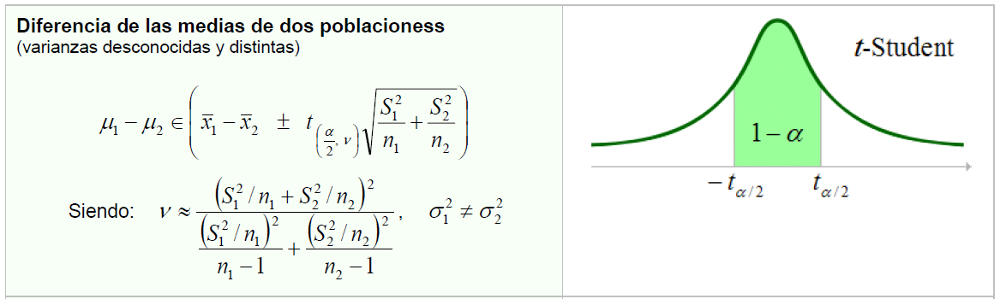
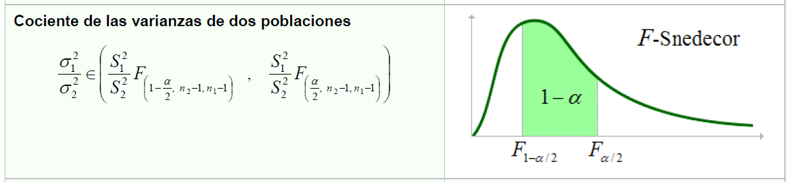
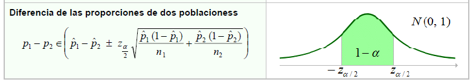

Intervalo de confianza al 95% para la media poblacional con varianza conocida
Un fabricante asegura que la varianza del peso de ciertos dispositivos electrónicos es conocida y constante, siendo de 25 gramos cuadrados. Se toma una muestra de 50 dispositivos y se encuentra que el peso promedio de la muestra es de 75 gramos. Con base en esta información, se requiere calcular un intervalo de confianza al 95% para la media poblacional del peso de los dispositivos electrónicos.
Ver código
n <-50# Tamaño de la muestramedia_muestral <-75# Media muestralvarianza_poblacional <-25# Varianza poblacional conocidanivel_confianza <-0.95# Nivel de confianza (95%)# Calcular el error estándarerror_estandar <-sqrt(varianza_poblacional / n)# Calcular el valor crítico Z para el nivel de confianzaz_critico <-qnorm((1+ nivel_confianza) /2)# Calcular los límites del intervalo de confianzalimite_inferior <- media_muestral - z_critico * error_estandarlimite_superior <- media_muestral + z_critico * error_estandar# Mostrar resultadoscat("Intervalo de confianza para la media poblacional:[", limite_inferior, ",", limite_superior, "]\n")
Intervalo de confianza para la media poblacional:[ 73.6141 , 76.3859 ]
Interpretación: Con una confianza del 95%, se puede estimar que el verdadero peso promedio de los dispositivos electrónicos, se encuentra entre: 73.6141 y 76.3859 gramos. Y habrá una probabilidad del 5% de encontrar valores para dicha verdadera media por fuera del anterior intervalo.
2.2 . Media varianza desconocida
Intervalo de confianza para la media poblacional varianza desconocida
\bar{x}\pm t_{(\alpha /2,n-1)}\frac{s}{\sqrt{n}}

Un investigador desea estimar la media poblacional del peso de ciertos dispositivos electrónicos basándose en una muestra de 10 dispositivos. Los pesos en gramos de estos dispositivos son: 72, 75, 78, 80, 68, 74, 77, 76, 73, y 79. El investigador no conoce la varianza poblacional y, por lo tanto, debe estimarla a partir de la muestra. Se requiere calcular un intervalo de confianza al 95% para la media poblacional del peso.
Ver código
datos_muestra <-c(72, 75, 78, 80, 68, 74, 77, 76, 73, 79) # Datos muestralesnivel_confianza <-0.95# Nivel de confianza (95%)# Calcular estadísticas muestralesn <-length(datos_muestra) # Tamaño de la muestramedia_muestral <-mean(datos_muestra) # Media muestraldesviacion_muestral <-sd(datos_muestra) # Desviación estándar muestral# Calcular el error estándarerror_estandar <- desviacion_muestral /sqrt(n)# Grados de libertadgrados_libertad <- n -1# Calcular el valor crítico t para el nivel de confianzat_critico <-qt((1+ nivel_confianza) /2, df = grados_libertad)# Calcular los límites del intervalo de confianzalimite_inferior <- media_muestral - t_critico * error_estandarlimite_superior <- media_muestral + t_critico * error_estandar# Mostrar resultadoscat("Intervalo de confianza para la media poblacional:[", limite_inferior, ",", limite_superior, "]\n")
Intervalo de confianza para la media poblacional:[ 72.61414 , 77.78586 ]
Interpretación: Con una confianza del 95%, se puede estimar que el verdadero peso promedio de los dispositivos electrónicos, se encuentra entre: 72.61414 y 77.78586 gramos. Y habrá una probabilidad del 5% de encontrar valores para dicha verdadera media por fuera del anterior intervalo.
2.3 . Proporción poblacional
Intervalo de confianza para la proporción poblacional
En una empresa, se realizó una encuesta entre 200 personas para saber cuántas prefieren un producto específico A. De las 200 personas encuestadas, 150 personas afirmaron que preferían el producto A sobre otros productos. Calcula el intervalo de confianza al 99% para la proporción de personas en la población que prefieren el producto A.
Ver código
intervalo_confianza_proporcion <-function(x, n, conf =0.99) {# x: número de éxitos (éxitos observados en la muestra)# n: tamaño de la muestra# conf: nivel de confianza (por defecto 99%)# Proporción muestral p_hat <- x / n# Valor z para el nivel de confianza deseado (en este caso, 99%) z <-qnorm(1- (1- conf) /2)# Error estándar de la proporción error <- z *sqrt((p_hat * (1- p_hat)) / n)# Limites inferior y superior del intervalo de confianza IC_inf <- p_hat - error IC_sup <- p_hat + error# Retornar el intervalo de confianzareturn(c(IC_inf, IC_sup))}# Ejemplo de uso# Número de éxitos (x), tamaño de la muestra (n) y nivel de confianzax <-150# Número de éxitosn <-200# Tamaño de la muestraconfianza <-0.99# Nivel de confianza deseado# Calcular el intervalo de confianzaic <-intervalo_confianza_proporcion(x, n, confianza)# Mostrar el resultadocat("Intervalo de confianza para la proporción poblacional: [", round(ic[1], 3), ",", round(ic[2], 3), "]\n")
Intervalo de confianza para la proporción poblacional: [ 0.671 , 0.829 ]
Interpretación: Con una confianza del 99%, se puede estimar que el verdadera proporción de personas que prefieren el producto A, se encuentra entre el 67.1% y el 82.9%. Y habrá una probabilidad del 1% de encontrar valores para dicha verdadera proporción por fuera del anterior intervalo.
2.4 . Varianza poblacional
Intervalo de confianza para la varianza poblacional
Imagina que eres un analista de calidad en una fábrica de bolígrafos. Se te ha pedido que determine si la variabilidad del peso de los bolígrafos producidos en la planta cumple con los estándares de calidad establecidos por la empresa. Para ello, tomas una muestra aleatoria de 30 bolígrafos y pesas cada uno. Sabemos que el peso de los bolígrafos sigue una distribución normal, pero la variación es desconocida. El objetivo es calcular un intervalo de confianza del 95% para la varianza poblacional del peso de los bolígrafos.
# Datos muestrales: pesos de los 30 bolígrafosmuestra <-c(5.12, 5.08, 5.10, 5.15, 5.11, 5.13, 5.14, 5.07, 5.16, 5.09, 5.13, 5.10, 5.08, 5.09, 5.14, 5.11, 5.10, 5.12, 5.13, 5.08, 5.15, 5.14, 5.10, 5.09, 5.13, 5.11, 5.12, 5.14, 5.10, 5.12)# Tamaño de la muestran <-length(muestra)# Calcular la varianza muestralvar_muestral <-var(muestra)# Nivel de confianza del 95%alpha <-0.05chi2_izq <-qchisq(1- alpha /2, df = n -1) # Cuantil superiorchi2_der <-qchisq(alpha /2, df = n -1) # Cuantil inferior# Calcular el intervalo de confianza para la varianzalim_inf <- (n -1) * var_muestral / chi2_izqlim_sup <- (n -1) * var_muestral / chi2_der# Mostrar los resultadoscat("La varianza muestral es:", var_muestral, "\n")
La varianza muestral es: 0.0005771264
Ver código
cat("Intervalo de confianza para la varianza poblacional del 95%: [", lim_inf, ", ", lim_sup, "]\n")
Intervalo de confianza para la varianza poblacional del 95%: [ 0.0003660505 , 0.001042973 ]
Interpretación: Con una confianza del 95%, se puede estimar que la verdadera varianza de los bolígrafos, se encuentra entre 0.0003660505 y 0.001042973 gramos. Y habrá una probabilidad del 5% de encontrar valores para dicha verdadera varianza por fuera del anterior intervalo.
2.5 . Diferencia de medias pareadas
Intervalo de confianza para la diferencia de medias poblacionales muestras pareadas
Un investigador desea evaluar el efecto de un tratamiento en la presión arterial de un grupo de 10 pacientes. Se toma la medida de la presión arterial de cada paciente antes y después del tratamiento. El investigador quiere construir un intervalo de confianza del 95% para la diferencia de medias (antes - después) de las presiones arteriales en este grupo.
Los datos de las presiones arteriales antes y después del tratamiento son los siguientes:

Ver código
# Datos de presión arterial antes y después del tratamientoantes <-c(140, 145, 150, 160, 155, 162, 148, 153, 158, 170)despues <-c(132, 138, 142, 155, 148, 154, 140, 146, 150, 160)# Calcular las diferenciasdiferencias <- antes - despues# Media y desviación estándar de las diferenciasmedia_diferencias <-mean(diferencias)sd_diferencias <-sd(diferencias)# Número de pacientesn <-length(diferencias)# Grados de libertaddf <- n -1# Valor crítico t para un intervalo de confianza del 95%t_critico <-qt(0.975, df)# Error estándar de la media de las diferenciaserror_estandar <- sd_diferencias /sqrt(n)# Intervalo de confianzalimite_inferior <- media_diferencias - t_critico * error_estandarlimite_superior <- media_diferencias + t_critico * error_estandar# Mostrar resultadoscat("Media de las diferencias:", media_diferencias, "\n")
Media de las diferencias: 7.6
Ver código
cat("Desviación estándar de las diferencias:", sd_diferencias, "\n")
Desviación estándar de las diferencias: 1.264911
Ver código
cat("Intervalo de confianza del 95% para la diferencia de medias: [", limite_inferior, ",", limite_superior, "]\n")
Intervalo de confianza del 95% para la diferencia de medias: [ 6.695137 , 8.504863 ]
Verificación del supuesto de normalidad:
Antes de realizar este análisis, sería recomendable verificar el supuesto de normalidad de las diferencias. Una forma común de hacerlo es mediante una prueba de normalidad como la prueba de Shapiro-Wilk:
Ver código
# Prueba de normalidad de las diferenciasshapiro.test(diferencias)
Shapiro-Wilk normality test
data: diferencias
W = 0.86764, p-value = 0.09382
Si el p-valor es mayor que 0.05, se puede asumir que las diferencias siguen una distribución normal.
Interpretación: Con una confianza del 95%, se puede estimar que la verdadera diferencia entre los promedios de la presión arterial antes y después de recibir el tratamiento, se encuentra aproximadamente entre 6.50 y 8.50 mmHg. Y habrá una probabilidad del 5% de encontrar valores para dicha diferencia verdadera de medias por fuera del anterior intervalo.
Como:

Conclusión:
El intervalo de confianza no incluye el valor cero, lo que sugiere que hay una diferencia estadísticamente significativa entre la presión arterial antes y después del tratamiento, en favor de una reducción en la presión arterial.
Esto implica que el tratamiento tiene un efecto positivo en la reducción de la presión arterial de los pacientes estudiados, y la evidencia sugiere que este efecto es consistente en el rango estimado.
Consideraciones adicionales:
Es importante recordar que el análisis se basa en el supuesto de normalidad de las diferencias entre las mediciones. En caso de que este supuesto no se cumpla (por ejemplo, si la prueba de Shapiro-Wilk indica que las diferencias no siguen una distribución normal), se podrían utilizar métodos no paramétricos como la prueba de Wilcoxon para la diferencia de medias en muestras pareadas.
Además, aunque el tratamiento parece efectivo según este análisis, este resultado solo es aplicable a la muestra estudiada. Se necesitaría un análisis más amplio para generalizar los resultados a una población más amplia.
En resumen, el tratamiento muestra un efecto positivo en la reducción de la presión arterial, pero siempre es recomendable hacer más pruebas para validar estos hallazgos.
2.6 . Diferencia de medias independientes
Caso a) Diferencia de las medias de dos poblaciones varianzas poblacionales conocidas
Se desea estimar la diferencia entre las medias de dos poblaciones independientes. Se tienen dos grupos, uno con 50 estudiantes que tomaron un curso de matemáticas en línea y otro con 60 estudiantes que tomaron un curso presencial. Las puntuaciones promedio de los exámenes finales de cada grupo y sus varianzas son las siguientes:
Para el grupo en línea:
\bar{X_{1}}=75
\sigma _{1} ^{2} = 100
Para el grupo presencial:
\bar{X_{2}}=70
\sigma _{2} ^{2} = 80
Ver código
# Datos del ejerciciox1_bar <-75# Media del primer grupo (en línea)x2_bar <-70# Media del segundo grupo (presencial)sigma1_sq <-100# Varianza del primer gruposigma2_sq <-80# Varianza del segundo grupon1 <-50# Tamaño de la muestra del primer grupon2 <-60# Tamaño de la muestra del segundo grupoz_alpha2 <-1.96# Valor crítico Z para un intervalo de confianza del 95%# Cálculo de la diferencia de mediasdiff_means <- x1_bar - x2_bar# Cálculo del error estándar de la diferencia de mediasse_diff <-sqrt(sigma1_sq / n1 + sigma2_sq / n2)# Cálculo del intervalo de confianzamargin_of_error <- z_alpha2 * se_difflower_bound <- diff_means - margin_of_errorupper_bound <- diff_means + margin_of_error# Resultadoscat("La diferencia de medias es:", diff_means, "\n")
La diferencia de medias es: 5
Ver código
cat("El error estándar es:", se_diff, "\n")
El error estándar es: 1.825742
Ver código
cat("El margen de error es:", margin_of_error, "\n")
El margen de error es: 3.578454
Ver código
cat("El intervalo de confianza del 95% es: [", lower_bound, ",", upper_bound, "]\n")
El intervalo de confianza del 95% es: [ 1.421546 , 8.578454 ]
Interpretación: Con una confianza del 95%, se puede estimar que la verdadera diferencia entre los promedios de las puntuaciones de los estudiantes en linea y los estudiantes en presencialidad, se encuentra aproximadamente entre 1.42 y 8.58 puntos. Y habrá una probabilidad del 5% de encontrar valores para dicha diferencia verdadera de medias por fuera del anterior intervalo.
Como:
Conclusión:
Dado que el intervalo de confianza no incluye el valor 0, podemos inferir que hay una diferencia significativa entre las medias de los dos grupos (en línea y presencial), al menos con un 95% de confianza. La diferencia está entre 1.42 y 8.58 puntos, lo que sugiere que el curso en línea tiene una puntuación final superior al curso presencial en el examen final.
Reflexión adicional:
Aunque el intervalo nos muestra que la diferencia de medias es significativa (no incluye 0), sería importante también considerar otros factores, como el tamaño del efecto (la magnitud de la diferencia) y si esta diferencia tiene relevancia práctica o educativa más allá de la estadística. Además, si el intervalo fuera más estrecho, podría indicar una mayor precisión en la estimación.
En resumen, este intervalo de confianza nos da una estimación razonablemente precisa de la diferencia entre las medias de los dos grupos, y nos permite afirmar con 95% de confianza que los estudiantes del curso en línea obtuvieron, en promedio, entre 1.42 y 8.58 puntos más que los estudiantes del curso presencial.
Para que los resultados del intervalo de confianza para la diferencia de medias con varianzas conocidas sean válidos, deben cumplirse varios supuestos fundamentales. A continuación te detallo los más importantes:
Independencia de las muestras:
Las dos muestras deben ser independientes. Es decir, los valores de una muestra no deben influir en los valores de la otra muestra. Esto implica que los estudiantes en el curso en línea no deben estar relacionados con los estudiantes del curso presencial (por ejemplo, no deben ser los mismos estudiantes en ambos cursos ni deben compartir características comunes que afecten los resultados).
Distribuciones normales (o n grandes):
Las poblaciones de donde provienen las muestras deben seguir distribuciones normales. Si las muestras son pequeñas (generalmente menos de 30), este supuesto se vuelve más crítico. Sin embargo, si las muestras son grandes, por el teorema central del límite, no es estrictamente necesario que las poblaciones sean normales, ya que la distribución de la diferencia de medias tenderá a ser normal, incluso si las poblaciones originales no lo son.
Si el tamaño de las muestras es pequeño, es recomendable comprobar que las distribuciones de ambas poblaciones son aproximadamente normales, o bien, que no existe evidencia de fuertes sesgos o distribuciones muy asimétricas.
Varianzas conocidas:
Este supuesto es clave para este tipo de intervalo de confianza. Las varianzas poblacionales de las dos poblaciones deben ser conocidas y no deben cambiar entre muestras.
En la práctica, es raro conocer las varianzas poblacionales exactas, por lo que este supuesto a menudo se aborda mediante el uso de estimaciones de las varianzas muestrales cuando las varianzas son desconocidas. En estos casos, se usaría una distribución t de Student en lugar de una distribución normal estándar.
Muestras aleatorias:
Las muestras deben ser aleatorias y representativas de las poblaciones de interés. Esto asegura que no haya sesgo en la selección de los participantes en cada grupo (por ejemplo, estudiantes del curso en línea y del curso presencial deben ser seleccionados al azar de sus respectivas poblaciones).
Tamaños de muestra suficientemente grandes (si es necesario):
Aunque no es un supuesto estricto, es importante que las muestras sean suficientemente grandes para que el error estándar sea representativo de la población. Si las muestras son pequeñas, la validez del intervalo puede verse afectada, y se puede requerir el uso de una distribución t, especialmente si las varianzas no son conocidas.
Caso b) Diferencia de las medias de dos poblaciones varianzas poblacionales desconocidas e iguales

Caso c) Diferencia de las medias de dos poblaciones varianzas poblacionales desconocidas y distintas

Para determinar si las varianzas poblacionales desconocidas son iguales o distintas, se debe calcular el siguiente intervalo para el cociente de dos varianzas poblacionales:

Si el anterior intervalo contiene al número 1, las varianzas poblacionales desconocidas seran iguales, en caso contrario distintas
Un investigador quiere estudiar si hay una diferencia significativa en las puntuaciones finales de un curso de matemáticas entre dos grupos de estudiantes: uno que tomaron el curso en línea y otro que lo tomaron de manera presencial. Para ello, toma una muestra de estudiantes de ambos grupos y obtiene los siguientes datos:
Grupo 1: Estudiantes que tomaron el curso en línea: Puntuaciones finales de 10 estudiantes: 72, 75, 79, 81, 74, 85, 78, 69, 83, 77
Grupo 2: Estudiantes que tomaron el curso presencial: Puntuaciones finales de 12 estudiantes: 68, 70, 72, 74, 65, 73, 80, 79, 67, 66, 71, 75
Calcular un intervalo de confianza del 95% para la diferencia entre las medias de los dos grupos. Se asume que las muestras provienen de distribuciones normales.
Primero se debe determinar si las varianzas poblaciones desconocidas son iguales o distintas
Ver código
# Datos del ejerciciogrupo1 <-c(72, 75, 79, 81, 74, 85, 78, 69, 83, 77) # Puntuaciones grupo 1grupo2 <-c(68, 70, 72, 74, 65, 73, 80, 79, 67, 66, 71, 75) # Puntuaciones grupo 2# Calcular desviaciones estándar y tamaños de muestras1 <-sd(grupo1)s2 <-sd(grupo2)n1 <-length(grupo1)n2 <-length(grupo2)# Calcular el cociente de varianzasvar_ratio <- (s1^2) / (s2^2)# Grados de libertaddf1 <- n1 -1# Grados de libertad para grupo 1df2 <- n2 -1# Grados de libertad para grupo 2# Nivel de confianza (ejemplo: 95%)alpha <-0.05# Obtener los valores críticos de FF_lower <-qf(alpha /2, df1, df2) # Valor crítico inferiorF_upper <-qf(1- alpha /2, df2, df1) # Valor crítico superior# Calcular el intervalo de confianza para el cociente de varianzasCI_lower <- var_ratio / F_upperCI_upper <- var_ratio / F_lower# Imprimir resultadoscat("Cociente de varianzas:", var_ratio, "\n")
Cociente de varianzas: 1.057619
Ver código
cat("Intervalo de confianza para el cociente de varianzas:", CI_lower, "a", CI_upper, "\n")
Intervalo de confianza para el cociente de varianzas: 0.2703474 a 4.137484
Como el anterior intervalo contiene al número 1, se puede concluir que las varianzas poblacionales desconocidas son iguales (Caso b)
Intervalo para la diferencia de medias
Ver código
# Datos del ejerciciogrupo1 <-c(72, 75, 79, 81, 74, 85, 78, 69, 83, 77) # Puntuaciones grupo 1grupo2 <-c(68, 70, 72, 74, 65, 73, 80, 79, 67, 66, 71, 75) # Puntuaciones grupo 2# Calcular medias y desviaciones estándarmean1 <-mean(grupo1)mean2 <-mean(grupo2)s1 <-sd(grupo1)s2 <-sd(grupo2)# Tamaños de las muestrasn1 <-length(grupo1)n2 <-length(grupo2)# Estimación combinada de la varianza (sp^2)sp2 <- (((n1 -1) * s1^2) + ((n2 -1) * s2^2)) / (n1 + n2 -2)# Cálculo del error estándar combinadoSE <-sqrt(sp2 * (1/n1 +1/n2))# Diferencia de mediasdiff_means <- mean1 - mean2# Grados de libertaddf <- n1 + n2 -2# Valor crítico tt_critical <-qt(1-0.025, df)# Cálculo del margen de errormargin_of_error <- t_critical * SE# Intervalo de confianzalower_bound <- diff_means - margin_of_errorupper_bound <- diff_means + margin_of_error# Resultadoscat("La diferencia de medias es:", diff_means, "\n")
La diferencia de medias es: 5.633333
Ver código
cat("El error estándar combinado es:", SE, "\n")
El error estándar combinado es: 2.094921
Ver código
cat("El valor crítico t es:", t_critical, "\n")
El valor crítico t es: 2.085963
Ver código
cat("El intervalo de confianza del 95% es: [", lower_bound, ",", upper_bound, "]\n")
El intervalo de confianza del 95% es: [ 1.263404 , 10.00326 ]
Conclusión:
Como:
Dado que el intervalo de confianza no incluye el valor 0, podemos inferir que hay una diferencia significativa entre las medias de los dos grupos (en línea y presencial), al menos con un 95% de confianza. La diferencia está entre 1.26 y 10 puntos, lo que sugiere que el curso en línea tiene una puntuación final superior al curso presencial en el examen final.
Resumiendo los supuestos:
*Normalidad de los datos en cada grupo (especialmente importante con muestras pequeñas).
*Independencia de las muestras (los grupos no deben estar relacionados entre sí).
*Igualdad de varianzas entre las dos poblaciones.
*Muestras aleatorias.
Si todos estos supuestos se cumplen, el cálculo del intervalo de confianza para la diferencia de medias es válido y los resultados serán confiables.
2.7 . Diferencia de dos proporciones poblacionales

En una investigación de mercado, se desea comparar la proporción de clientes satisfechos con un producto en dos tiendas diferentes. Se obtiene una muestra aleatoria de 300 clientes de la Tienda A y 250 clientes de la Tienda B. Los resultados de las encuestas son los siguientes:
Tienda A: 180 clientes están satisfechos con el producto. Tienda B: 150 clientes están satisfechos con el producto.
Construya un intervalo de confianza del 95% para la diferencia de las proporciones poblacionales de clientes satisfechos entre la Tienda A y la Tienda B.
Ver código
# Datos proporcionadosx_A <-180# Número de clientes satisfechos en la Tienda An_A <-300# Tamaño de la muestra de la Tienda Ax_B <-150# Número de clientes satisfechos en la Tienda Bn_B <-250# Tamaño de la muestra de la Tienda B# Paso 1: Calcular las proporciones muestralesp_A <- x_A / n_Ap_B <- x_B / n_B# Paso 2: Calcular la diferencia de las proporciones muestralesdiff_p <- p_A - p_B# Paso 3: Calcular el error estándar de la diferencia de proporcionesSE <-sqrt((p_A * (1- p_A) / n_A) + (p_B * (1- p_B) / n_B))# Paso 4: Determinar el valor crítico z para un intervalo de confianza del 95%z_critical <-qnorm(0.975) # 0.975 corresponde a un intervalo de confianza del 95%# Paso 5: Calcular el intervalo de confianzamargin_error <- z_critical * SElower_bound <- diff_p - margin_errorupper_bound <- diff_p + margin_error# Resultado finalcat("La diferencia de las proporciones muestrales es:", diff_p, "\n")
La diferencia de las proporciones muestrales es: 0
Ver código
cat("El intervalo de confianza del 95% para la diferencia de proporciones es: [", lower_bound, ", ", upper_bound, "]\n")
El intervalo de confianza del 95% para la diferencia de proporciones es: [ -0.0822251 , 0.0822251 ]
Conclusión:
Con un intervalo de confianza del 95%, podemos decir que no hay evidencia suficiente para concluir que la diferencia en la satisfacción de los clientes entre las Tiendas A y B es estadísticamente significativa. El intervalo que incluye cero sugiere que la verdadera diferencia de proporciones podría ser cero, lo que significa que, aunque la muestra mostró una diferencia, no podemos afirmar con certeza que esta diferencia exista en la población.
Es posible que otros factores, como el tamaño de las muestras o la variabilidad de los datos, estén afectando los resultados. Para hacer una afirmación más sólida, podrías necesitar más datos o realizar pruebas adicionales.